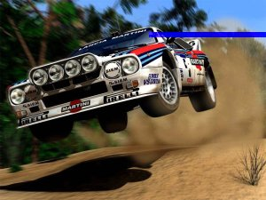

COMP
104 : Programming
Lab
8 : Comp104 Rally!

In lab 8, you will write a
Car Racing game. A car will start from the top-middle of a map and then
run towards the bottom. User has to guess which column the car will
reach at the end of its journey.
Requirements:
- The size of the
map is determined by the user at the beginning of the game.
- All arrays must be dynamic arrays
in this lab (i.e., no static arrays). Use a simulated 2D array
with an overall dimension of [SIZE*SIZE].
map = new int [SIZE*SIZE]; // where SIZE is the
number of rows/columns
- All array indexing must be with
pointer arithmetic rather than
subscripts.
For example, to access row r and column c of the simulated 2D array map[SIZE][SIZE], use *(map+r*SIZE+c) rather than map[r][c].
- Your program
must not have any memory leaks or dangling pointers.
- All variables
must be local variables (i.e., no global variables).
- The density of
'+' should be around 25%.
Rules for the car’s
movement:
- Car will go to next
row if there is no obstacle in front of it.
- If there is an obstacle in front of the car, it will randomly
move left or right. If the obstacle is on the car's left or right side,
the car's movement will not be affected, .
- If the car goes off the map, it will crash and user will lose the
game.
Here are some examples:
Example 1:
| + + |
| + +
+ |
|
+ + |
|
+ |
|
+ + |
| + @
+ |
|
+ + + |
| 1 2 3 4 5 6 7 |
1. The car meets a '+', it
turns left.
|
+ + |
| + +
+ |
|
+ + |
|
+ |
|
+ + |
| @
+ |
|
+ + + |
| 1 2 3 4 5 6 7 |
2. The car will cover the '+'
on its left side.
|
+ + |
| + +
+ |
|
+ + |
|
+ |
|
+ + |
| +
+ |
| @ +
+ + |
| 1 2 3 4 5 6 7 |
3. After the car leaves, '+'
will appear again.
Example 2:
| @ |
| + |
| + |
| 1 2 3 |
|
|
| @ + |
| + |
| 1 2 3 |
Car crashed!!!
1. In the second step, the car
decides to turn left.
2. It hits the wall and is then
crashed.
Remarks:
You must check the range
of input. The size of map should range from 3 to 19, and the range of
the guess should be from 1 to the size of map. Obstacles should be randomly assigned to the map and you should
put at least one space between any two obstacles.
Here is the sample of a
map with size 19:
| + + + @ + + + + |
| + + + + |
| + + + + + + + |
| + + + + + + + |
| + + + + + |
| + + + + + |
| + + + + + + |
| + + + + + + |
| + + |
| + + + + + |
| + + + + + + |
| + + + + |
| + + + + + |
| + + + + + |
| + + + + |
| + + + + |
| + + + + + |
| + + + + + + |
| + + + + + + |
| 1 2 3 4 5 6 7 8 9 0 1 2 3 4 5 6 7 8 9 |
Below the map is the
column number, from 1 to the size of map. In order to produce a tidy
output, for all numbers above 9, just output its rightmost digit,
therefore:
1 2 3 4 5 6 7 8 9
10 11 12 13 14 15 16 17 18 19
will be displayed as
1 2 3 4 5 6 7 8 9
0 1 2 3 4 5 6 7 8 9
Note that this replacement affects the output only. So, if the user
enters 3, that represents only the 3rd column and not the 13th column,
although they are both represented as 3 in the map. If user wants to
choose column 13, he must enter 13.
In order to create the
illusion of the car moving, use the following command to clear the
screen and output the map again:
system("cls");
It is defined in <cstdlib>.
Here are some sample
output: output_win.txt, output_lose.txt and output_crash.txt.
Demo your working program for your TA. If
for some
reason you cannot finish before the end of the lab period, email your
program
to your TA by Sunday 13 November 5PM (please include your name and lab
section
as a comment on line 1 of your program).